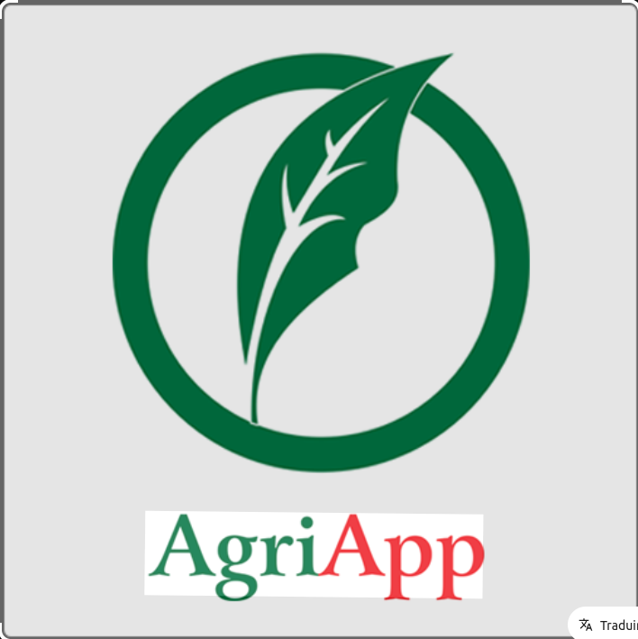

Agricole
Description du projet
AgriApp est une plateforme numérique conçue pour moderniser et optimiser la pratique agricole en Afrique de l'Ouest, en mettant la technologie au service des agriculteurs, qu'ils soient petits exploitants ou grandes coopératives.
Technologies utilisées
- HTML & CSS
- JavaScript
- PHP
- MySQL
- Bootstrap
Image du projet
